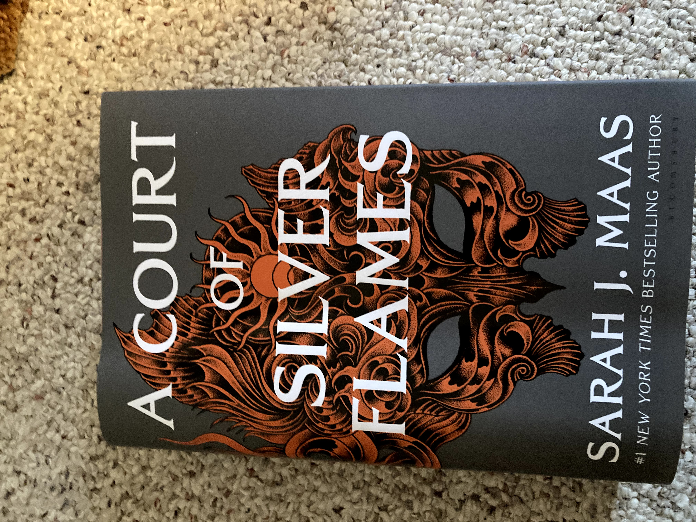
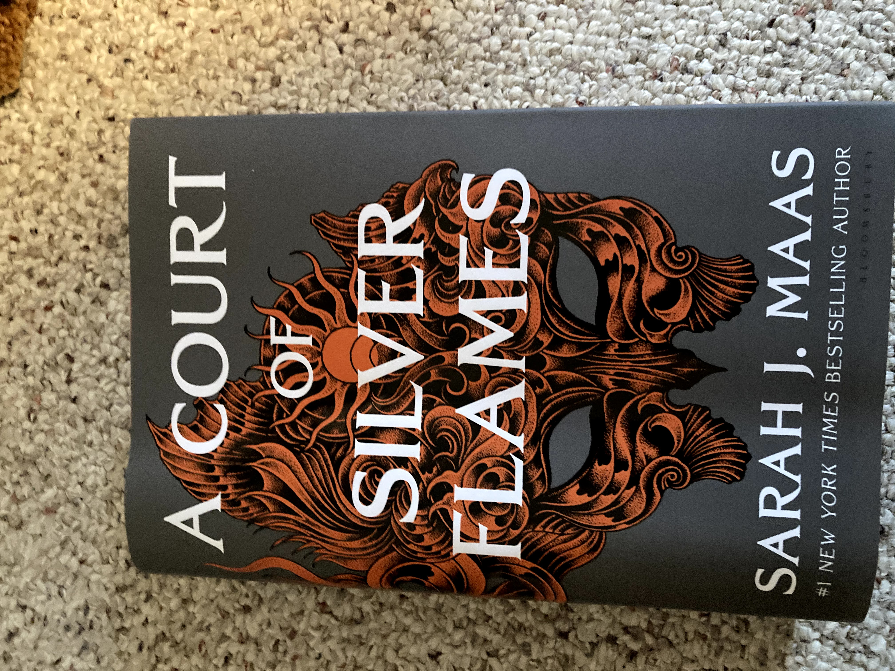

The Wild Irish Girl; a National Tale by Sydney Owenson, Lady Morgan
I have never heard of this book until I was reading a magazine about Romanticism and they talked about this book and the author. I do love the Romantic era so I was instantly drawn to this book. First published in 1806, the basic plot being that a young man is exiled to his father's country estate in Ireland and meets and Irish princess and falls in love. It is considered a nationalist story as the young man and the princess represent England and Ireland and their recent union and the hope that the then recent union between Ireland and England would be a happy one. *Spoiler alert* in real life the union between Ireland and England was most definitely an unhappy one. The story is mostly told through letters and it reminds me very much of Dracula as that is told in the manner. I am excited to delve deeper into the story and get to the melodramatic bits.
Other books I have recently read.
 

You can also find me on Goodreads and StoryGraph just search for stormgambit on there as it won't let me link my profile.